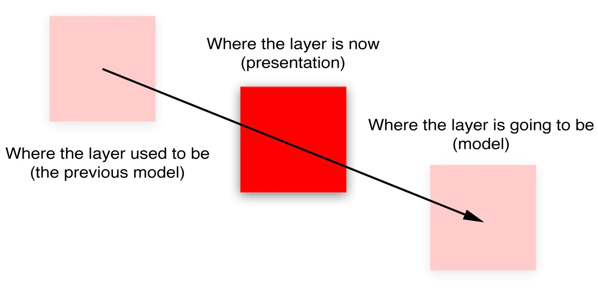

CALayer的属性行为其实很不正常，因为改变一个图层的属性并没有立刻生效，而是通过一段时间渐变更新。这是怎么做到的呢？
当你改变一个图层的属性，属性值的确是立刻更新的（如果你读取它的数据，你会发现它的值在你设置它的那一刻就已经生效了），但是屏幕上并没有马上发生改变。这是因为你设置的属性并没有直接调整图层的外观，相反，他只是定义了图层动画结束之后将要变化的外观。
当设置CALayer的属性，实际上是在定义当前事务结束之后图层如何显示的模型。Core Animation扮演了一个控制器的角色，并且负责根据图层行为和事务设置去不断更新视图的这些属性在屏幕上的状态。
我们讨论的就是一个典型的微型MVC模式。CALayer是一个连接用户界面（就是MVC中的view）虚构的类，但是在界面本身这个场景下，CALayer的行为更像是存储了视图如何显示和动画的数据模型。实际上，在苹果自己的文档中，图层树通常都是值的图层树模型。
在iOS中，屏幕每秒钟重绘60次。如果动画时长比60分之一秒要长，Core Animation就需要在设置一次新值和新值生效之间，对屏幕上的图层进行重新组织。这意味着CALayer除了“真实”值（就是你设置的值）之外，必须要知道当前显示在屏幕上的属性值的记录。
每个图层属性的显示值都被存储在一个叫做呈现图层的独立图层当中，他可以通过-presentationLayer方法来访问。这个呈现图层实际上是模型图层的复制，但是它的属性值代表了在任何指定时刻当前外观效果。换句话说，你可以通过呈现图层的值来获取当前屏幕上真正显示出来的值（图7.4）。
我们在第一章中提到除了图层树，另外还有呈现树。呈现树通过图层树中所有图层的呈现图层所形成。注意呈现图层仅仅当图层首次被提交（就是首次第一次在屏幕上显示）的时候创建，所以在那之前调用-presentationLayer将会返回nil。
你可能注意到有一个叫做–modelLayer的方法。在呈现图层上调用–modelLayer将会返回它正在呈现所依赖的CALayer。通常在一个图层上调用-modelLayer会返回–self（实际上我们已经创建的原始图层就是一种数据模型）。

图7.4 一个移动的图层是如何通过数据模型呈现的
大多数情况下，你不需要直接访问呈现图层，你可以通过和模型图层的交互，来让Core Animation更新显示。两种情况下呈现图层会变得很有用，一个是同步动画，一个是处理用户交互。
-hitTest:方法（见第三章“图层几何学”）来判断指定图层是否被触摸，这时候对呈现图层而不是模型图层调用-hitTest:会显得更有意义，因为呈现图层代表了用户当前看到的图层位置，而不是当前动画结束之后的位置。我们可以用一个简单的案例来证明后者（见清单7.7）。在这个例子中，点击屏幕上的任意位置将会让图层平移到那里。点击图层本身可以随机改变它的颜色。我们通过对呈现图层调用-hitTest:来判断是否被点击。
如果修改代码让-hitTest:直接作用于colorLayer而不是呈现图层，你会发现当图层移动的时候它并不能正确显示。这时候你就需要点击图层将要移动到的位置而不是图层本身来响应点击（这就是为什么用呈现图层来响应交互的原因）。
清单7.7 使用presentationLayer图层来判断当前图层位置
@interface ViewController ()
@property (nonatomic, strong) CALayer *colorLayer;
@end
@implementation ViewController
- (void)viewDidLoad
{
[super viewDidLoad];
//create a red layer
self.colorLayer = [CALayer layer];
self.colorLayer.frame = CGRectMake(0, 0, 100, 100);
self.colorLayer.position = CGPointMake(self.view.bounds.size.width / 2, self.view.bounds.size.height / 2);
self.colorLayer.backgroundColor = [UIColor redColor].CGColor;
[self.view.layer addSublayer:self.colorLayer];
}
- (void)touchesBegan:(NSSet *)touches withEvent:(UIEvent *)event
{
//get the touch point
CGPoint point = [[touches anyObject] locationInView:self.view];
//check if we've tapped the moving layer
if ([self.colorLayer.presentationLayer hitTest:point]) {
//randomize the layer background color
CGFloat red = arc4random() / (CGFloat)INT_MAX;
CGFloat green = arc4random() / (CGFloat)INT_MAX;
CGFloat blue = arc4random() / (CGFloat)INT_MAX;
self.colorLayer.backgroundColor = [UIColor colorWithRed:red green:green blue:blue alpha:1.0].CGColor;
} else {
//otherwise (slowly) move the layer to new position
[CATransaction begin];
[CATransaction setAnimationDuration:4.0];
self.colorLayer.position = point;
[CATransaction commit];
}
}
@end